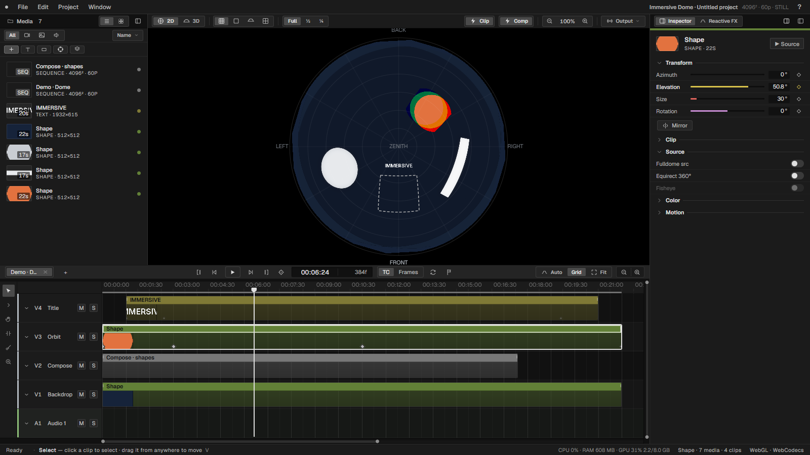
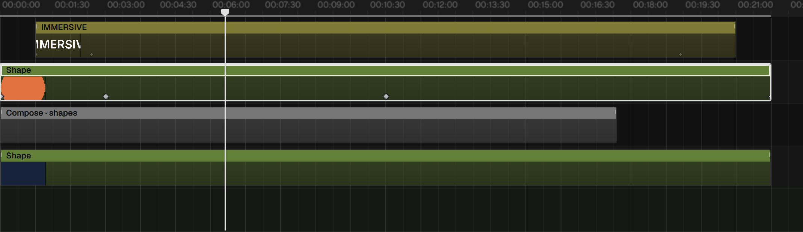
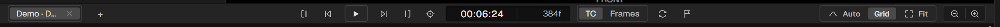
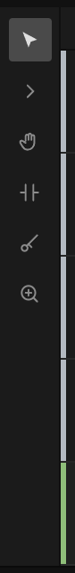
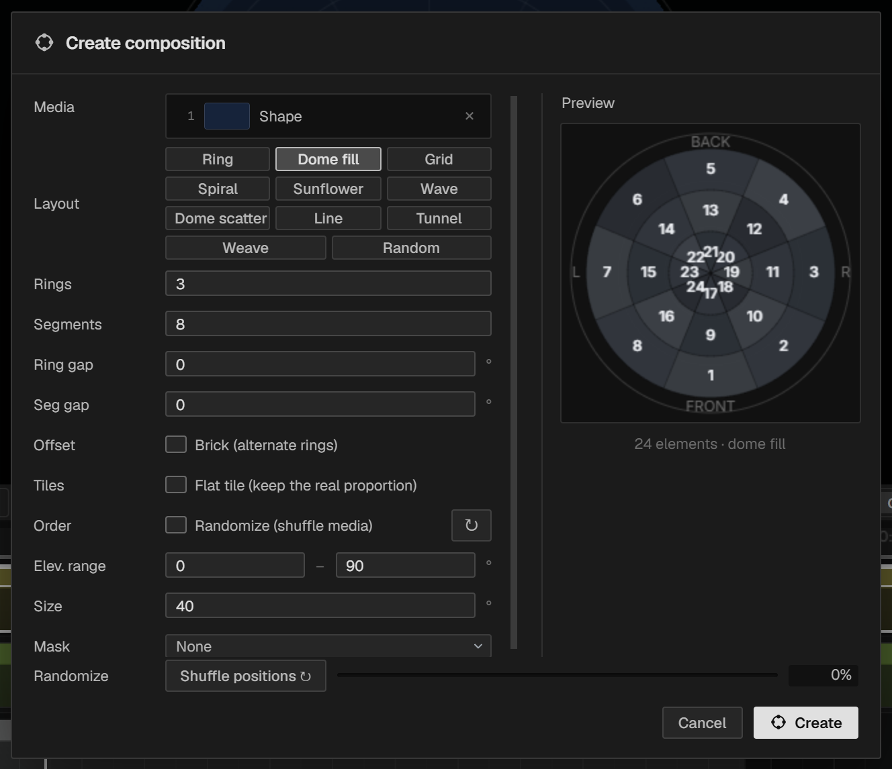
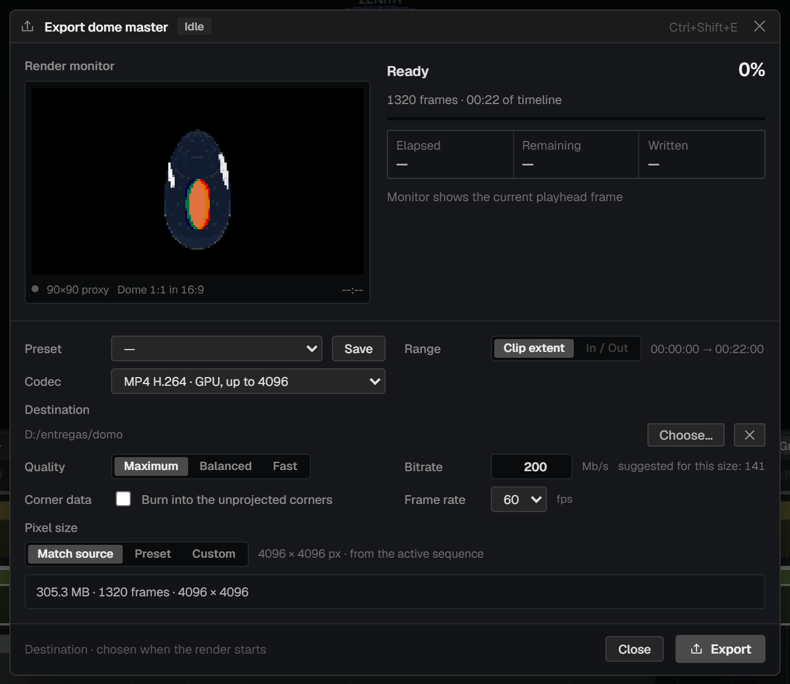

Immersive Studio Pro is a video editor for work that is not shown on a rectangle. It edits for fulldome domes, for ordinary flat screens, and for rooms whose walls and floor are all projection surfaces — and it treats all three as first-class formats rather than as an export option bolted onto a flat timeline.
It is a desktop application built by Alma Digital Studio for its own productions. Everything renders on the GPU through WebGL2: clips are warped into the dome in real time, effects run as shaders, and the master is composited to a single texture that the viewer, the live outputs and the exporter all read from. There is no render queue standing between you and what you are looking at.

It is not a colour-grading suite, not an audio workstation, and not a general-purpose NLE competing with Premiere or Resolve on breadth. It carries the editing tools an immersive piece actually needs and stops there. Sound design happens elsewhere and comes back as a mix; heavy grading happens elsewhere and comes back as a LUT, which the program will apply per clip.
Part one covers concepts and a first project. Part two walks the interface panel by panel. Parts three and four cover editing and the creative tools in the order you would meet them. Part five covers delivery. Part six is reference material — menus, shortcuts, parameter tables — meant for looking things up rather than reading.
Two conventions are used throughout. Interface labels appear as Fulldome src, exactly as they read on screen. Keys appear as Ctrl+E; on macOS read Ctrl as ⌘ unless stated otherwise.
The interface ships in English with a Spanish translation available. This manual documents the English labels.
Immersive Studio Pro is a desktop application for Windows and macOS. It has no online component, no licence server and no project cloud: everything lives on your disk.
| Windows | Windows 10 or 11, 64-bit. A discrete GPU is strongly recommended — the program asks the system for the high-performance adapter automatically on hybrid laptops. |
| macOS | Apple Silicon. Rendering and export both use the GPU. |
| Memory | 16 GB is a working minimum for dome work at 4096². Decoding several layers of high-bitrate footage at once is the memory-hungry part, not the compositing. |
| Disk | Fast local storage for media. Exports at 4096² are large: budget roughly 300 MB per minute at 200 Mb/s. |
Run the installer, Immersive Studio Pro Setup 1.0.0.exe. It installs per user, so it does not ask for administrator rights, and it registers the .isp project extension so that double-clicking a project opens it.
The program opens on the start screen. This is where a project begins: you choose the format, set every parameter, and see a preview of the result before anything is created.
You can come back to this screen at any time with File → New project… (Ctrl+N). If a project is already open it stays open behind the screen, and Back to project returns to it untouched.
Demos builds a complete working project in the format you choose — several tracks, clips, a composition, motion, an effect and automation — and then runs a short guided tour over it. Nothing in it is locked: change it, break it, save it as your own. It is the fastest way to see how the pieces fit.

Project → Preferences… holds the application-wide settings, including the interface language. Project settings — resolution, frame rate, dome coverage — live in Project → Sequence settings… instead, because they belong to the sequence rather than to the program.
Six ideas explain most of the program's behaviour. They are worth understanding before you start, because several of them have no equivalent in a flat editor and guessing produces frustrating results.
Every sequence is in one of three modes, chosen when it is created and shown in the format chip at the top right of the window.
Whatever the format, every visible clip is drawn into a single master image each frame. The viewer shows that master; NDI and Spout broadcast it; the exporter records it. There is no separate "render" pass with different rules, which is why what you see while editing is what you get on delivery.
In a dome sequence the master is square and the image is a fisheye circle inside it. Nothing outside that circle is part of the picture. The corners are black, or transparent if you export with alpha. This is not a crop applied at the end — it is what a fulldome master is.
A fulldome master is an azimuthal-equidistant fisheye, and its coverage is the field of view it represents: 180° for a true hemisphere, or 200°, 210° or 220° for domes that continue below the horizon. The setting lives in Project → Sequence settings… and changes the projection everywhere at once — the warp, the 2D guides, the 3D preview and the export.

Coverage is not a look, it is a statement about the venue. A piece mastered at 180° and projected in a 210° dome will be wrong at the edges, and no amount of repositioning fixes it. Set it once, at the start, from the venue's specification.
This is the distinction that causes the most confusion, and it is simple once stated. A clip in a dome sequence is treated in one of two ways:
A third switch, Equirect 360°, handles equirectangular 360° footage and reprojects it into the dome. Fisheye — with its own Amount — bends a fulldome source further, and is only available when Fulldome src is on, because bending a picture that is not covering the dome has no meaning.

A sequence is not a separate document — it is an item in the media pool, and it can be dropped into another sequence as a clip. That single idea gives you Premiere-style tabs, nesting, and generated compositions, all with the same machinery. Chapter 15 covers it properly.
Video, stills, audio, text, shapes, generated compositions, nested sequences and adjustment layers are all clips on tracks. They trim the same way, they carry the same inspector sections where those apply, and they animate the same way. There is no separate title tool or effects layer with its own rules.
A short walkthrough that touches the main parts of the program: create a dome sequence, bring in footage, place it on the dome, animate it, add a generated composition and export a master. Twenty minutes, start to finish.
Drag files onto the media panel, or press Ctrl+I. Video, stills, audio and image sequences are all accepted. If a clip is heavy, the status bar will suggest generating a proxy — right-click the item and choose Generate proxy. Proxies are never made automatically; see chapter 10.
Negative elevation places a clip below the horizon. In a dome with coverage above 180° that is real projected area, not a mistake.
Open Motion in the inspector and click a preset — Orbit makes it travel around the horizon, Float gives it a slow untethered drift. Presets are not black boxes: each one drops ordinary modifiers into the list, and you can retune, disable or delete them one at a time.
For a movement with an exact start and end, use keyframes instead: put the playhead where you want it, set the value, and the program records a keyframe automatically — the same rule as After Effects. Chapter 19 covers both.
The composition is a nested sequence with real clips inside it. Double-click it to go in and edit them by hand; the parameters that generated it stay available in the inspector.
Save your project as you go with Ctrl+S. Projects are .isp files, written atomically with a .bak alongside.
One window, four panels, and no floating clutter. The layout does not change between formats — only what the viewer draws changes.
Drag the gutters between panels to resize them. The media and inspector panels can be collapsed entirely from Window, or with the two small buttons at the top right of the inspector. The timeline's height is dragged from its top edge.
Ctrl+K, F1 or ? opens a searchable list of every command in the program with its shortcut. It is the fastest way to find something whose menu you have forgotten, and the fastest way to learn the shortcuts.


Two ways to get the picture onto a projector without the interface around it, both under Window and both in the Output menu above the viewer:
The project's inventory. Everything that can become a clip lives here, including the sequences and compositions the program generates itself.


Below the header: Import and four generators.
| Import | Opens the file picker. Also Ctrl+I. |
| Text | Creates a text item — font, weight, alignment, fill, outline colour. Custom fonts can be loaded. |
| Shape | Creates a rectangle, ellipse or line with fill and stroke. |
| Compose | Builds a generated composition from the selected media. Chapter 16. |
| Adjust | Creates an adjustment layer — a clip with no picture of its own that applies its effects to everything below it. |
Right-click an empty area of the panel to create a folder. Folders nest and can be given colours. Drag items between them. Renaming media, moving it between folders and creating or deleting folders are all undoable.
Click to select, Shift+click for a range, Ctrl+click to add or remove. Multi-selection matters for two things in particular: generating several proxies at once, and building a composition from a set of sources.
The viewer shows the composite master — the actual picture, not an approximation of it. It has two modes, and in an immersive format both are worth having open.
The 2D / 3D switch at the top left of the viewer bar chooses between them.


The 2D view is where you judge framing and delivery; the 3D view is where you judge whether it reads. A shape that looks reasonable as a fisheye can be badly distorted overhead, and only the 3D view will tell you.
Clips can be dragged in the viewer. In a dome that moves azimuth and elevation; in a 2D or room sequence it moves x and y. Point masks are drawn and edited on the viewer canvas too — see chapter 17.
In a dome sequence nothing outside the inscribed circle is delivered. If part of a clip appears to spill into the corners of the 2D view, it is outside the projected image, and the export will show black — or transparency, if you exported with alpha.
Tracks, clips and time. The gestures are the ones you already know from a conventional editor, with two differences worth learning early: overlapping is a cut, and fades are dragged from the clip corner.


| Play / pause | Space | Plays from the playhead. It plays whether or not there are clips there. |
| Go to start / end | Home · End | |
| Shuttle | J K L | Press J or L repeatedly for 2×, 4×, 8×. K stops. |
| Previous / next cut | ↑ ↓ | |
| Timecode | Click TC or Frames to switch what is displayed. | |
| Loop | Sets the loop range from the time selection. |
With a loop range set, pressing play inside it loops. Pressing play outside it plays straight through. The loop constrains playback only when you start inside it.

| Select | V | Select, move, trim. |
| Track select | Selects everything from the click onwards. | |
| Hand | H | Pans the view. |
| Trim | T | Contextual trim: ripple, roll, slip, slide. |
| Razor | B | Cuts a clip. |
| Zoom | Z | Zooms to the click. |
The status bar always spells out what the active tool does, so you never have to guess which mode you are in.

Right-click a header to add, duplicate, rename, colour or delete a track. Drag a header up or down to reorder. Video tracks stack bottom-to-top: a clip on V3 draws over a clip on V1.
| Zoom | Ctrl+wheel, or + / −. Zooming is anchored to the pointer. |
| Track height | Alt+wheel. |
| Pan horizontally | Shift+wheel, or a horizontal wheel. |
| Scroll vertically | Plain wheel. |
A vertical bar at the right edge of the timeline mirrors the horizontal one: its body scrolls, its end caps change the track height.
M drops a named marker at the playhead; , and . jump between them. Markers are drawn in the lower half of the ruler. There is also a command to detect beats in an audio clip and place markers on them.
Everything about the selected clip, in seven collapsible sections. Which sections appear depends on what kind of clip it is — an audio clip has no Transform, an adjustment layer has no Source.
| Transform | Where the clip sits. Azimuth, elevation, size and rotation in a dome; x, y, scale and rotation in 2D and rooms. Plus Mirror. |
| Clip | Opacity, blur, crop, mask, blend mode, black key. Chapter 17. |
| Source | How the footage is interpreted: Fulldome src, Equirect 360°, Fisheye. Chapter 3. |
| Playback | Speed and looping. Chapter 11. |
| Color | Exposure through to LUT. Chapter 18. |
| Motion | Procedural movement. Chapter 19. |
| Effects | The effects chain for this clip. Chapter 20. |
Every numeric parameter is one row: a name, a coloured track, a value box and a keyframe diamond.
If a parameter is already animated, changing its value creates a keyframe at the playhead rather than shifting the whole curve — the same rule as After Effects. If it is not animated, the value simply changes.
The top of the inspector shows the clip's thumbnail, name and kind, and a Source button that opens the source monitor on that media.
The second tab holds the audio-reactive engine and the effects chain. It is documented in chapter 20.
Whether numbered images become a sequence is decided by which command you use, not by a checkbox afterwards. This is the Premiere model.
A proxy is a light, all-intra copy of a heavy clip used for editing. In this program proxies are manual: nothing is transcoded behind your back.
Long-GOP camera masters can take over a second per frame to scrub. A proxy brings that to a few milliseconds. For that kind of material it is not a nicety — it is the difference between editing and waiting.
Double-click a media item — or press Source in the inspector — to open the source monitor: a floating player for reviewing material and marking the part you want.

Text items carry font, weight, alignment, fill and outline colour, and can load custom font files. They are rendered at a generous internal resolution so they stay sharp on a 4K dome; there is no pixel-size field because the proportion of the canvas is what matters, not the point size.
Shape items are a rectangle, ellipse or line with a fill and a stroke.
Projects are .isp files — JSON, written atomically with a .bak alongside. The program also autosaves, keeps a recovery history, and can save incremental versions (_v01, _v02…) from the Save button's right-click menu.
Drag a clip anywhere on its body to move it. A ghost shows where it will land. Alt+drag copies instead of moving. Linked audio and video move together, and a linked partner is constrained to horizontal movement so the pair cannot be separated onto mismatched tracks.
When you drop a clip on top of another, the moved clip trims the stationary one — and splits it in two if it lands in the middle. Nothing is destroyed: the trimmed material is still there, and dragging the clip away again does not restore it, but the source is untouched. No crossfade is created automatically.
Every clip has a small handle in its upper corners.
| Razor | B | Click to cut. |
| Split at playhead | Ctrl+E | Cuts the selection, or every clip under the playhead. |
| Delete | Del | Leaves a gap. |
| Ripple delete | Shift+Del | Closes the gap. |
Copying works on the whole selection, not one clip. When you paste, each clip lands on its own track at its original spacing relative to the first — a multi-layer arrangement pastes back intact. Linked pairs are relinked only if both halves were copied.
Ctrl+Alt+C and Ctrl+Alt+V carry everything that belongs to a clip — transform, looping, speed, colour, masks, effects, motion and all automation — from one clip to another. It works in both directions between an ordinary clip and a composition, because a composition is a clip.
What does not travel: identity, position, duration and the media itself. The destination always keeps its place and its length on the timeline. Neither does a composition's generating configuration.
Paste from a 40-second clip onto a 15-second one and only the automation that fits is kept. If the first surviving keyframe is not at the start, the interpolated value is inserted there, so the curve does not begin with a jump.

Turning the loop off trims the clip back to whatever is left of the file. Use From clip to redefine the cycle instead — it changes the cycle length and nothing else.

In a dome sequence a clip is placed by direction. This chapter covers the four transform parameters, the three source switches, and how to think about a curved surface.
| Azimuth | Compass bearing around the horizon, in degrees. 0° is the front of the dome. |
| Elevation | Height above the horizon, in degrees. 90° is the zenith, directly overhead. Negative values go below the horizon, which is real projected area in a dome with coverage above 180°. |
| Size | How much of the dome the clip subtends. |
| Rotation | Roll about the clip's own centre. |
| Mirror | Flips the clip horizontally. |
All four can be dragged in the row, typed exactly, keyframed and animated. Dragging the clip in the viewer moves azimuth and elevation together.
A rectangle placed on a dome is not a rectangle any more, and the distortion grows with size and with height. Two consequences to keep in mind:
Chapter 3 explains what these mean; this is how to use them.
A generated composition covers the whole dome by nature, so its clip is created with Fulldome src already on. You do not place it; you place the things inside it.
An adjustment layer is a clip with no picture. It applies its effects chain to everything composited below it, across the full dome. It has no Transform and no Source section — by contract it is always a full-frame fulldome clip — but it carries the complete effects catalogue.
A 2D sequence is an ordinary rectangular canvas. Everything in the program works the same way; only the placement model changes.

| Transform | X, Y, Scale and Rotation instead of azimuth, elevation and size. |
| Source section | The dome switches do not apply. |
| Viewer | The 3D preview is hidden — there is nothing to preview in 3D. |
| Motion presets | A flat set: Rotate, Pulse, Horizontal, Vertical, Float. |
| Compose | The flat layouts — grid, line, row, column, weave — rather than the dome ones. |
Two reasons, both structural:
You can add a 2D sequence to a dome project at any time from Project → New sequence…; formats mix freely within one project.
A room is several projection surfaces treated as one piece: walls unrolled into a single wide strip, an optional floor, a 3D preview from the audience position, and an export that can deliver the whole thing or one projector's worth at a time.
The room is defined when the project is created, and can be reconfigured at any time from Project → Room geometry….

Each wall has a role (front, right, back, left), a physical width and height in centimetres, and a pixel resolution. The plan preview solves the wall loop into a floor plan and will tell you if the geometry does not close, or if it closes by crossing itself.
The strip you edit is measured in pixels — its width is the sum of the walls' pixel widths. The physical measurements exist so the 3D preview has the right proportions and so the floor can be derived correctly. Getting the centimetres wrong makes the preview lie; getting the pixels wrong makes the delivery wrong.

You edit this exactly like a 2D sequence: clips are placed by x, y and scale, and a clip can span a seam and run across two walls. The seams and labels are guides, not boundaries.
Floor content goes on floor tracks, identified by a blue-framed tag in the track header. The floor is part of the same canvas rather than a separate sequence, so one composite covers everything.

The content is drawn unshaded on purpose: this view is a preview of what will be projected, and a decorative light would misrepresent the brightness. The shading you see belongs to the translucent shell drawn around the outside.
The export sheet offers three modes for a room:
| Full strip | The walls only, as one wide file. |
| Strip + floor | Two files: the wall strip and the floor. |
| Each wall + floor | One file per wall plus the floor — one per projector. Only offered when the room has a floor. |

A sequence is a media item. That is the whole mechanism, and it gives you tabs, nesting and compositions at once.

Tabs are a fixed width so the bar does not shift as you rename things; three are visible at a time and the rest are reached with the wheel over the tabs. Drag a tab to reorder. + creates a new sequence.

Select some clips and choose Nest selection from the Edit menu or the clip's context menu. They are replaced by a single clip that contains them. Double-click it to go inside; the tab bar shows where you are.
The rule is that no sound plays unless it is visible on an audio track. A nest containing audio tracks therefore creates a derived audio clip in the parent, linked to the video clip. It moves, trims and unlinks like any A/V pair, and you can see exactly what is making sound.
A nest can be cached as a single video, so playback decodes one stream instead of many. On a heavy composition this is the difference between a slideshow and something you can work with. The cache invalidates itself when the composition's contents change.
Right-click a clip or a nest and choose Render in place… to bake it to a silent MP4 and replace the timeline instance with the baked file on a new track. Useful for freezing an expensive composition once it is final. A progress view shows the live frame, a bar and an estimate, and can be cancelled.
Compose builds an arrangement out of your own footage — a ring of clips around the horizon, a tunnel rushing towards the viewer, a woven basket filling the dome — and hands it back as an editable nested sequence rather than as an effect you cannot get inside.

The Media field shows what the composition contains — thumbnails, names and order — not a checklist of the whole project. Remove with ×; add by dragging from the media panel or by double-clicking there. Order matters: it decides which source goes where.
| Type | What it makes |
|---|---|
| Ring | A circle of clips at one elevation. |
| Dome fill | Fills the dome with a grid of rings and segments. Tiles are not distorted. |
| Grid | A rectangular grid. |
| Spiral | A spiral from the zenith outwards. |
| Sunflower | Phyllotactic packing — even coverage with no visible rows. |
| Wave | A wave-shaped band. |
| Dome scatter | Even quasi-random scattering over the hemisphere. |
| Line | A straight line of clips. |
| Tunnel | Depth: elements grow from the centre and pass the viewer. |
| Weave | Interlaced strips travelling endlessly, like basketry. |
| Random | Random placement with a jitter control. |

No particular shape is assumed — a ring reads as a legible tunnel, but any distribution of alpha works. Each element is phase-shifted so the stream is continuous. The controls are:
Elements are drawn in depth order every frame, since their ranking by nearness rotates as they cycle.

Weave never distorts its sources: the side that crosses the strip takes the strip's thickness and the other follows the media's own proportions. One source per strip. The interlacing — which strip passes over which — is decided per crossing rather than per clip, so the pattern stays still while the strips flow through it.
Every composition can crop its elements to a shape, with a size from 0 to 100 %. It is the quickest way to turn square footage into a ring of circles.
Two surfaces, and they agree with each other:
And because the composition is a real nest, you can also go inside and move individual clips by hand. Manual changes are preserved when the composition is regenerated.
It goes to the nearest track with a free gap for its duration, measured from the selected track header — or from the bottom if none is chosen. Only if there is no room does it create a new track.

| Opacity | 0–100 %. |
| Blur | In pixels. |
| Crop | Trims the edges of the source. |
| Mask | A shape or an image mask — see below. |
| Point mask | Add mask starts a drawn mask. |
| Blend | Normal, Add, Screen, Multiply, Darken, Lighten. |
| Remove black | Keys out a black background — for footage delivered without alpha. |
The Mask dropdown offers Circle, Rounded, Diamond and Vignette, plus Custom for a PNG used as a matte. A size control scales the mask, and a feather softens its edge.
Add mask lets you draw a mask by clicking points, directly on the viewer canvas — the same place you see the picture. A clip can carry several, each with its own invert and feather. This is the tool for isolating part of a shot rather than cutting it to a geometric shape.
Effects live in the Effects section of the inspector and in the Reactive FX tab — the same chain seen from two places. Add with Add Effect, reorder by dragging, switch one off with its power button, remove it with the bin.
Every effect parameter can be keyframed, and every effect can additionally be driven by audio. Chapter 20 covers the audio side; chapter 28 lists all 26 effects with their parameters.
To treat the whole picture rather than one clip, use an adjustment layer: an effects chain that applies to everything composited under it. Create one from Adjust in the media panel's create row, or from Add Adjustment Layer in the Reactive FX tab.
Colour is per clip and runs entirely in the shader, which means it costs nothing extra and applies identically in the viewer, the live outputs and the export.

| Exposure | Overall brightness. |
| Contrast | |
| Saturation | |
| Temp | Warm / cool. |
| Tint | Green / magenta. |
| Glow | A soft bloom around highlights. |
| Chroma | Chromatic aberration. |
All seven can be keyframed and animated.
The three wheels are a primary grade in the usual arrangement: Lift for shadows, Gamma for midtones, Gain for highlights. Drag inside a wheel to push the colour, use the bar beneath it for level.
A tone curve with Luma, R, G and B channels. Click to add a point, drag to shape, Reset to straighten.
LUT → Load… imports a .cube 3D LUT and applies it per clip as the final step of the colour chain. This is the intended route for a look developed in a grading application: grade there, export a LUT, apply it here.
A dome is a large, close, curved surface, and material that looks controlled on a monitor is often too bright in the venue. Judge exposure on the dome itself, or at least in the 3D preview, before committing.
Two ways to make something move, meant for different jobs. Motion is procedural: endless, parameterised, no keyframes. Automation is keyframed: exact values at exact times. They stack, and a mix control balances them.

Click a preset chip to add a modifier. Presets are shortcuts, not black boxes — each one stamps ordinary modifiers into the list, and you can retune, disable or delete them individually.
| Preset (dome) | Moves |
|---|---|
| Spin | Rotation about the clip's own centre. |
| Orbit | Azimuth — travel around the horizon. |
| Bob | Elevation, back and forth. |
| Scroll ↕ | Elevation, continuously. |
| Sway | Azimuth, back and forth. |
| Pulse | Size. |
| Wobble | Roll. |
| Flicker | Opacity. |
| Float | A chord — see below. |
In a 2D or room sequence the set is Rotate, Pulse, Horizontal, Vertical and Float.
Float is the one preset that is a chord rather than a parameter. The sensation of floating does not live in any single axis — it lives in the mixture of horizontal drift, vertical drift and a gentle roll, out of phase with one another. The preset stamps three normal modifiers with deliberately non-multiple periods (11, 14 and 18 seconds) so they never close their cycles together and the movement never visibly repeats. A master Intensity control from 0 to 300 % scales the chord while preserving whatever you have retuned by hand.
In a dome it uses the slide parameters rather than azimuth and elevation, because a degree of azimuth covers far less ground near the zenith than at the horizon — the same drift would otherwise look different depending on where the clip sat.
Every parameter row has a diamond. Click it to set a keyframe at the playhead; click a filled one to remove it. Once a parameter has any keyframe, editing its value writes another one at the playhead rather than moving the whole curve.

Each track shows one parameter's curve at a time, chosen by two chips in the track header: the left one picks the category or device — Transform, Clip, Color, or any Motion or Effect actually applied — and the right one picks the parameter. A ◆ marks whatever is already automated. Touching a parameter in the inspector brings its curve into view automatically, without requiring a keyframe first.
Each Motion modifier has a Mix from 0 to 100 %, and the mix itself can be keyframed. That is how you fade a procedural drift in and out over a scene while a keyframed move handles the composition underneath.
Beyond keyframes and motion, a parameter can be driven by a stack of modulation layers — LFOs, audio followers and spatial functions — from the modulation panel. It is the most open-ended of the three routes and the one to reach for when you want a value to wander rather than to arrive.
The second inspector tab: an audio analysis engine and an effects chain whose parameters it can drive. Effects work perfectly well without audio — this is where you wire them to it.

| Source | Which audio drives the analysis. |
| Band meters | BASS, MID, TREB, BRT — live levels for the three frequency bands and overall brightness. |
| BPM | Detected tempo, or set manually. |
| Gain | Input level into the analysis. |
| Gate | Threshold below which nothing responds — keeps room noise from twitching the picture. |
| Attack / Release | How fast the follower rises and falls, in milliseconds. The engine defaults, which each effect can override. |
Each entry has a power button, a name, a collapse arrow and a bin, and expands into three groups.
| Intensity | The effect's overall strength. Keyframeable. |
| Reactivity | How much of that strength the audio controls. At 0 % the effect is static. |
| Attack / Release | Per-effect override of the engine timings. |
| Curve | Shapes the response — linear through to sharply exponential. |
| Bounce | Adds overshoot, so a hit springs past its target and settles. |
The effect's own controls, each with a keyframe diamond. Chapter 28 lists them for all 26 effects.
A common mistake is to set reactivity high and then fight the result. Set the look you want statically with Intensity first, then raise Reactivity until it breathes.
Audio handling is deliberately modest. The program is a picture editor: it plays a mix, lets you place and trim it, and drives the reactive engine from it.
Audio tracks live at the bottom of the track column and carry a subtle tint in both the header and the row. Audio clips trim, move and fade like any other, and the waveform is drawn at screen resolution for the visible span only.
Audio fades are the clip's corner handles, the same gesture as video, and the fade is the volume. There are no separate fade-in and fade-out fields.
Video imported with sound arrives as a linked pair. The two move and trim together; unlink them from the clip context menu when you need to.
The rule depends on the container:
A command in the palette detects beats on an audio clip and places locators on them, which then act as snap targets for cutting to music.

| Codec | Ceiling | Use for |
|---|---|---|
| PNG sequence · lossless | None | Mastering and archival. Optionally without alpha, on black — still lossless. |
| MP4 H.264 · GPU | 4096 × 4096 | The fast path for a 4K dome master. |
| MP4 H.265 · GPU | 8192 × 8192, 10-bit | Large formats, wide room strips, and 10-bit when gradients band. |
| MP4 · H.264 (built-in) | 3072 × 3072 | Fallback when the GPU encoder is unavailable. |
| MP4 · H.265 (built-in) | 1080 × 1080 | Fallback only. Too small for dome delivery. |
| MOV · HAP / HAP Q | None | Playback systems that want HAP. Large files, very cheap to decode. |
| Still frame · PNG | None | A single frame — stills for documentation. |
The entries marked GPU use the graphics card's hardware encoder and reach real dome resolutions. The other two use the built-in browser encoder, which refuses anything above 3072 × 3072 for H.264 and about 1080 × 1080 for H.265. For dome work, use the GPU entries.
With a GPU codec selected you get Quality — Maximum, Balanced, Fast — and an explicit Bitrate in Mb/s, with a suggested figure for the chosen size. For a 4096² master, 150–250 Mb/s at Maximum is a sensible delivery range.
Bit depth offers 10-bit on H.265, which is worth taking for dome work: large smooth gradients across a big surface are exactly where 8-bit banding shows.
Save a configuration with Save next to the Preset dropdown and recall it later. Worth doing once per venue.
The monitor at the top left shows the frame the encoder has just written — not a guess, the actual output. Elapsed, remaining and written counters sit beside it. Jobs run one at a time; a room export in Each wall + floor mode queues one job per surface automatically.
To bake part of a project rather than deliver it, use Render in place… from a clip's context menu — see chapter 15.
A 4096² export is a long operation. Let it run a minute, stop it, and look at the file in the player you will actually use before committing to the whole piece.
A dome master is a circle inside a square, which leaves four corners that are never projected. Corner data uses them for identification — title, author, running timecode — so a review copy carries its own labelling without touching the picture.

| Bottom left | The title of the work, in large type. |
| Bottom right | Running timecode and frame count, advancing with the export. |
| Top left | A logo image. |
| Top right | Creator, resolution, duration and format. |
Window → Show corner data draws it in the viewer. This is a view setting only.
Burning it in is a separate switch, in the export sheet: Corner data → Burn into the unprojected corners.
The two switches are deliberately separate. Turning the overlay on while you edit never affects a file, and a master you export is clean unless you explicitly asked for corner data to be burned in.
The composite master can be broadcast live while you work, which is how you drive a dome during a rehearsal or feed a media server without exporting anything.

| Full performance | The viewer takes over the whole window. |
| Viewer window | A second window for another display, showing the complementary view. |
| NDI | Broadcasts the clean master over the network. Any NDI receiver can pick it up. |
| Spout | Shares the master with another application on the same Windows machine, GPU to GPU with no copy through system memory. |
What is broadcast is the clean master — no guides, no overlays, no corner data.
NDI also works the other way: a live NDI stream can be added as a media item and used as a clip, which is how you bring in a live camera or another machine's output.
If the NDI runtime is not installed the program offers a link to it. Spout is Windows-only.


| New project… | Ctrl+N | Goes to the start screen. The open project stays behind it. |
| Open… | Ctrl+O | Opens .isp, and legacy .ise / .rdome. |
| Save | Ctrl+S | |
| Save As… | Ctrl+Shift+S | |
| Export… | Ctrl+Shift+E |
| Undo / Redo | Ctrl+Z · Ctrl+Shift+Z | |
| Cut | Ctrl+X | |
| Copy / Paste | Ctrl+C · Ctrl+V | Operates on the whole selection. |
| Copy attributes | Ctrl+Alt+C | Chapter 11. |
| Paste attributes | Ctrl+Alt+V | |
| Duplicate | Ctrl+D | |
| Delete | Del | Leaves a gap. |
| Ripple delete | Shift+Del | Closes the gap. |
| Nest selection | Chapter 15. |
| Sequence settings… | Resolution, frame rate, dome coverage. | |
| Dome coverage (FOV)… | Dome sequences only. | |
| Room geometry… | Room sequences only. Reconfigures; does not create a new project. | |
| New sequence… | Dome, 2D or 360 Room. | |
| Preferences… | Ctrl+, |
| Media panel | Show or hide. | |
| Inspector panel | Show or hide. | |
| Viewer-only window | Second window, complementary view. | |
| Show corner data | Draws it in the viewer. Does not affect files. | |
| Corner data settings… | Fills in the title, author and logo. | |
| Full performance | Viewer fills the window. | |
| Guided tour | Relaunches the onboarding tour. | |
| All commands & shortcuts | F1 | The command palette. |
On macOS read Ctrl as ⌘. The complete list is always available in the program itself with F1.
| Type | Principal parameters |
|---|---|
| Ring | Count, elevation, size, ring radius. |
| Dome fill | Rings, segments, ring gap, segment gap, offset, tiles. |
| Spiral | Count, turns, size. |
| Sunflower | Count, size. |
| Wave | Count, amplitude, frequency. |
| Dome scatter | Count, size, jitter. |
| Random | Count, size, jitter. |
| Tunnel | Count, from, to, speed, depth, spin, helix, fade in, fade out. |
| Type | Principal parameters |
|---|---|
| Grid | Columns, rows, gap. |
| Line | Count, spacing, angle. |
| Row / Column | Count, spacing. |
| Weave | Layout, strips, strip width, packing, long side, direction, speed per family, order. |
| Media | The basket — which sources, and in what order. |
| Mask | Shape and size (0–100 %) applied to every element. |
| Order | Shuffle which source goes where. |

Twenty-six effects, grouped by family. Every parameter can be keyframed, and every effect can be driven by audio from the Reactive FX tab. Effects marked feedback read the previous frame, so their look builds up over time.
Save diagnostics log… in the command palette writes a log file describing the environment and recent activity. Send it with a description of what you were doing.
Immersive Studio Pro — user manual for version 1.0.
Created by Alma Digital Studio. Creative direction by Beltrán.
Every screenshot in this manual was captured from the running application, and every menu, shortcut, effect and parameter table was read from the program itself rather than transcribed by hand.
August 2026.